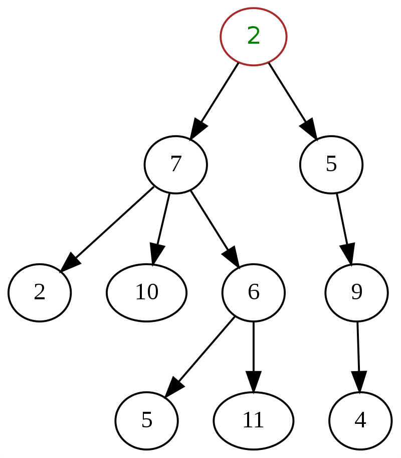

Что такое простое дерево?
Дерево (Tree) – это нелинейная структура данных, состоящая из узлов, которые соединены связями (ребрами). В простом дереве каждый узел может иметь несколько дочерних узлов, но только одного родителя (кроме корневого узла).

Принцип работы:
- Каждый узел содержит данные и список дочерних узлов.
- Корневой узел является начальной точкой дерева.
- Добавление узла выполняется через указание родительского узла.
- Удаление узла приводит к удалению всех его потомков.
- Поиск узла может быть выполнен по значению.
Что такое листья в дереве?
В теории графов и структур данных листом называется узел, не имеющий дочерних элементов. Листья представляют собой конечные элементы дерева, которые не имеют потомков.
Скорость работы функций в дереве
- Добавление узла (AddChild) – O(1), так как добавление идет напрямую в массив дочерних узлов родителя.
- Удаление узла (DeleteNode) – O(n), так как в худшем случае приходится удалять всех потомков рекурсивно.
- Поиск узла по значению (FindNodesByValue) – O(n), требуется полный обход дерева.
- Перемещение узла (MoveNode) – O(n), так как необходимо найти узел и изменить ссылки.
- Подсчет количества узлов (Count) – O(n), так как необходимо посетить каждый узел.
- Подсчет количества листьев (LeafCount) – O(n), так как требуется перебор всех узлов для проверки, есть ли у них потомки.
Что такое обход в глубину (DFS)?
Обход в глубину (Depth-First Search, DFS) – это алгоритм, который исследует узлы дерева, спускаясь вниз по каждому пути, пока не дойдет до конечного узла (листа), а затем возвращается назад.
📌 Пример обхода
Для дерева ниже:
1
/ \
2 3
/ \ \
4 5 6
Результат DFS: 1 → 2 → 4 → 5 → 3 → 6
Как работает getAllNodes()?
Функция `getAllNodes()` выполняет обход в глубину (DFS) и собирает все узлы в список.
📌 Алгоритм работы:
- Начинаем с корневого узла.
- Добавляем его в список.
- Рекурсивно вызываем функцию для всех дочерних узлов.
- Повторяем процесс, пока не пройдем все узлы.
Код структуры дерева на Swift
class TreeNode {
var value: T // значение в узле
weak var parent: TreeNode? //родитель или nil для корня
var children: [TreeNode] = [] // список дочерних узлов
init(value: T, parent: TreeNode? = nil) {
self.value = value
self.parent = parent
}
}
class SimpleTree {
var root: TreeNode? //корень, может быть nil
init(root: TreeNode) {
self.root = root
}
// ✅ Добавление дочернего узла
func addChild(parent: TreeNode, newChild: TreeNode) {
}
// ✅ Удаление узла и всех его потомков
func deleteNode(node: TreeNode) {
// Если узел - корень, ничего не удаляем
// Удаляем из списка детей родителя
// Удаляем всех потомков рекурсивно (или через forEach)
}
// ✅ Получение всех узлов (обход в глубину DFS)
func getAllNodes() -> [TreeNode] {
}
// ✅ Поиск узлов по значению
func findNodesByValue(value: T) -> [TreeNode] {
// ✅ Перемещение узла в другое место
func moveNode(originalNode: TreeNode, newParent: TreeNode) {
}
// ✅ Подсчет количества узлов в дереве
func countNodes() -> Int {
}
// ✅ Подсчет количества листьев (узлов без потомков)
func leafCount() -> Int {
}
}
// Создание узлов
let root = TreeNode(value: 1)
let node2 = TreeNode(value: 2)
let node3 = TreeNode(value: 3)
let node4 = TreeNode(value: 4)
let node5 = TreeNode(value: 5)
let node6 = TreeNode(value: 6)
// Создание дерева
let tree = SimpleTree(root: root)
// Добавление узлов
tree.addChild(parent: root, newChild: node2)
tree.addChild(parent: root, newChild: node3)
tree.addChild(parent: node3, newChild: node4)
tree.addChild(parent: node4, newChild: node5)
tree.addChild(parent: node2, newChild: node6)
// Вывод всех значений узлов
print(tree.getAllNodes().map { $0.value }) // [1, 2, 6, 3, 4, 5]
// Перемещение узла
tree.moveNode(originalNode: node5, newParent: node2)
// Проверка после перемещения
print(tree.getAllNodes().map { $0.value }) // [1, 2, 6, 5, 3, 4]
// Подсчет узлов и листьев
print("Количество узлов: \(tree.countNodes())") // 6
print("Количество листьев: \(tree.leafCount())") // 3